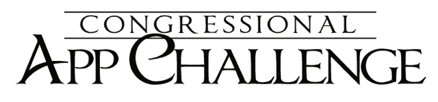
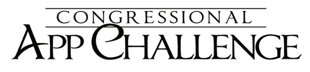

About Me
Welcome to my personal portfolio! My name is Justin Veltri, and I am passionate about exploring the world of computer science. Currently, I am a freshman at Monmouth University, where I am immersing myself in the realm of Computer Science and Software Engineering.
Beyond the classroom, I actively seek opportunities to apply my knowledge to real-world projects. I believe in the power of hands-on experience to deepen understanding. Throughout my academic journey, I've had the privilege of engaging in diverse projects that have honed my problem-solving skills and fueled my enthusiasm for innovation.
My academic pursuits extend beyond coursework. I am deeply involved in the vibrant community at Monmouth, participating in coding clubs and collaborative projects. These experiences not only contribute to my technical skill set but also enchance my ability to work effectively in a team and tackle complex challenges.
Thank you for exploring my portfolio. I invite you to discover the projects, skills, and experiences that shape my journey in the world of computer science. Feel free to reach out—I'm always open to new opportunities.
Skills
In my journey through Computer Science and Software Engineering, I've cultivated a versatile skill set that empowers me to tackle a wide range of challenges. Here's a snapshot of my key skills:
-
Programming Languages: Proficient in Java, with an intermediate understanding in C#, and C++, allowing me to craft efficient solutions for various applications.
-
Web Development: Skilled in HTML and CSS, I have moderate experience in building visually appealing and responsive web interfaces.
-
Software Development: Adept at the software development process, from conceptualization and design to coding, testing, and finally deployment.
-
Data Structures and Algorithms: In-depth knowledge and practical application of fundamental data structures and algorithms for optimized problem-solving.
-
Version Control: Proficient in using Git and GitHub to manage collaborative projects and track changes systematically.
These technical skills are complemented by my commitment to staying knowledgeable in emerging technologies and adopting best possible practices in the ever-evolving field of computer science. Whether it's honing my proficiency in existing technologies or eagerly exploring new ones, I am dedicated to continuous learning and professional development.
 
